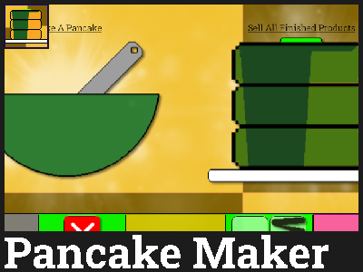

Pancake Maker
By AgentRylie (Rylie Eric)
Released on 1/10/2020
A game where you make pancakes to get profit, but this is not a traditional IGM game. Here you make pancakes by actually making them (Not Really. Mainly due to problems actually making it happen). Make Pancakes to make different kinds and get collectibles like Achievements and Useless Icons.
Game Link (Regular) - https://orteil.dashnet.org/igm/?g=rdekpqbD
Game Link (Mobile) - https://orteil.dashnet.org/igm/?g=9wsbEZpP
Save Fixer for Versions 0-2 - https://orteil.dashnet.org/igm/?g=3N1Gat25
Game Link (Ready To Steal Edition) - https://orteil.dashnet.org/igm/?g=JCktQ0Uv
Reddit Post - [Game] Pancake Maker
Projects page on Rylie Eric Website - https://rylieeric.neocities.org/projects/PM
Game Details (Work in Progress)
Pancake Maker is a game where you make pancakes. You do this through following the process of making one. You can unlock other method to help boost profit, such as drinks. There's also a variety of quests to do and achievements to get. This game was posted in Rylie's personal site, r/idlegamemaker, and Dashnet.
Rylie wanted to make a unique game on IGM, so she decided to work on several ideas throughout 2019, including what would end up being Pancake Maker. Pancake Maker ended up taking full focus and she worked on it for several hours a week. The cooking process was done in order and without much regard for bugs. The game lanuched on January 10th, 2020 at DashNet.
